真实微泡Streaming：尚未确定。两组规定剪切原生计算完成。所有断裂图为实际接受态，位移×1。
Actual acoustic/bubble inputs and missing streaming link are explicitly separated from the computed Stokes approximation.
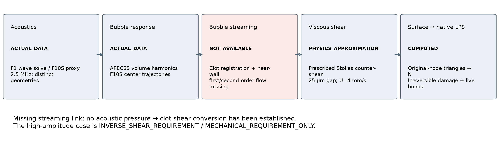
Solved prescribed flow and actual unregistered bubble positions. Bubble center velocity is not fluid velocity.
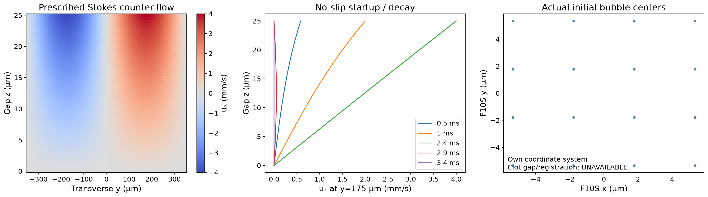
3611 actual CFD faces; no artificial outer shell. Existing signed and new positive maps are compared, neither is admitted as validated V3 streaming.
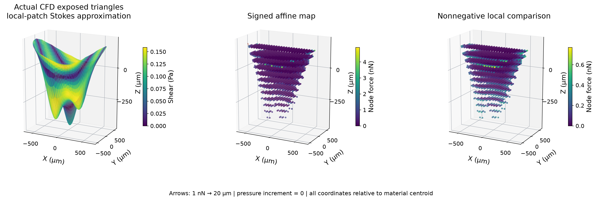
Continuous transverse counter-shear on the original top triangles. B has the same shape/time and a mechanical-only 1000 Pa peak.
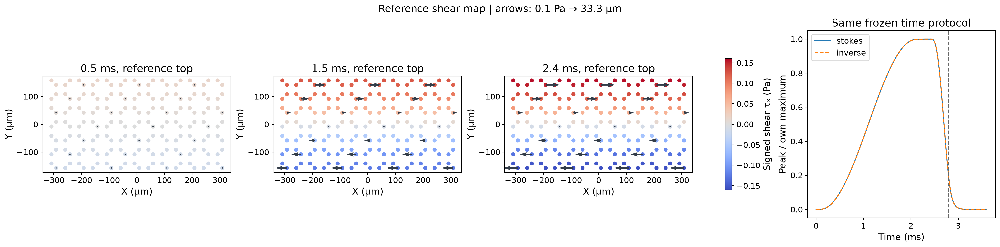
Original live material topology and actual positions. Red attached nodes are endpoints of naturally failed original bonds; no nonexistent broken connections are drawn across space. Common-ROI clipping is counted; all final nodes appear in Fig7. Missing stages remain NOT_OBSERVED.
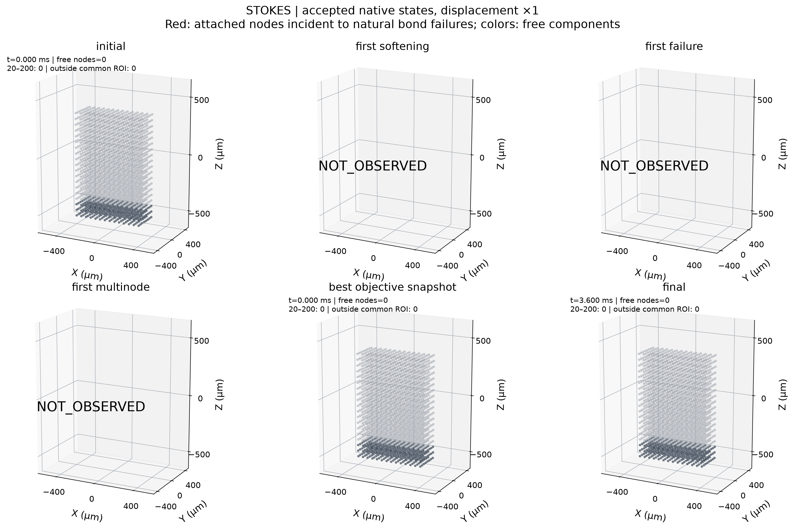
Original live material topology and actual positions. Red attached nodes are endpoints of naturally failed original bonds; no nonexistent broken connections are drawn across space. Common-ROI clipping is counted; all final nodes appear in Fig7. Missing stages remain NOT_OBSERVED.
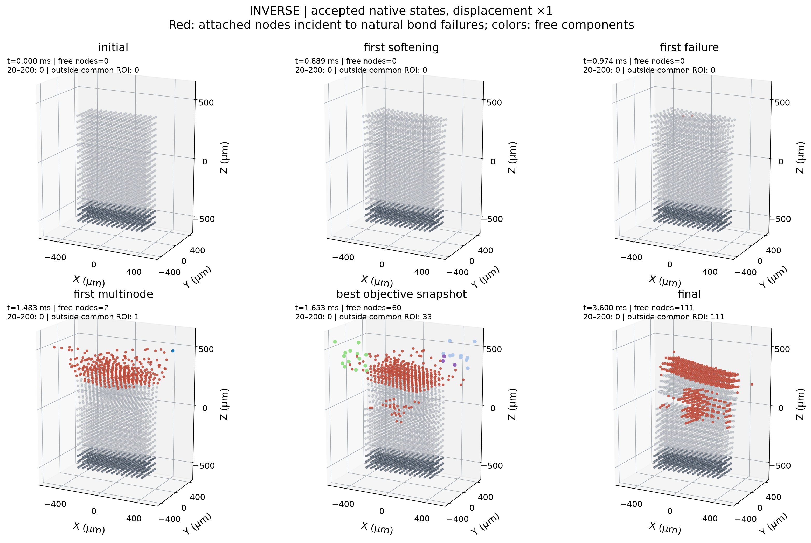
Empty bins are measured zeros. Mass is original material-node volume, anchors excluded.
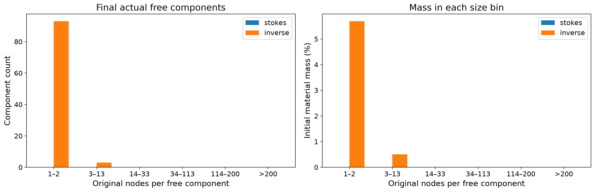
Full final extents, actual coordinates ×1 with independently fitted axis ranges. Inverse-case free nodes travel tens of millimeters under dead reference traction without solved fluid drag; this is not vessel transport. Spatial neighbors/contact pairs never define fragments. Colors may cycle for numerous small components.
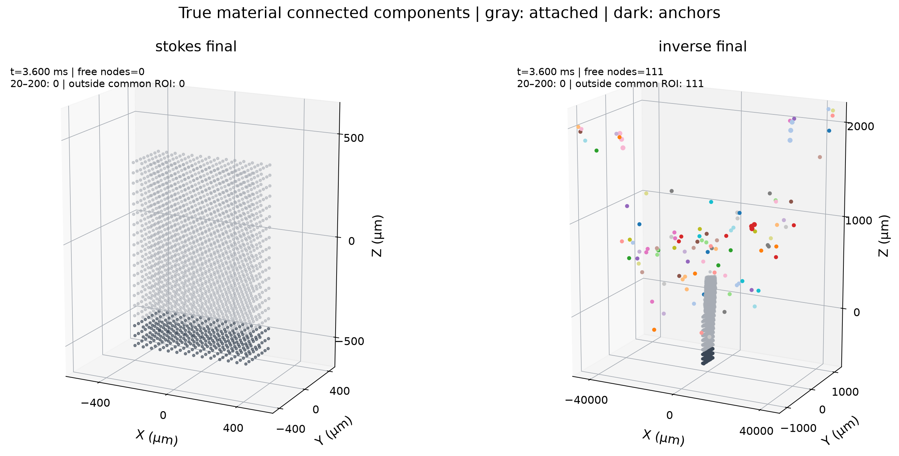
Physical acoustic capability remains undetermined; the large ratio is a controlled mechanical template scaling, not a validated bubble deficit.
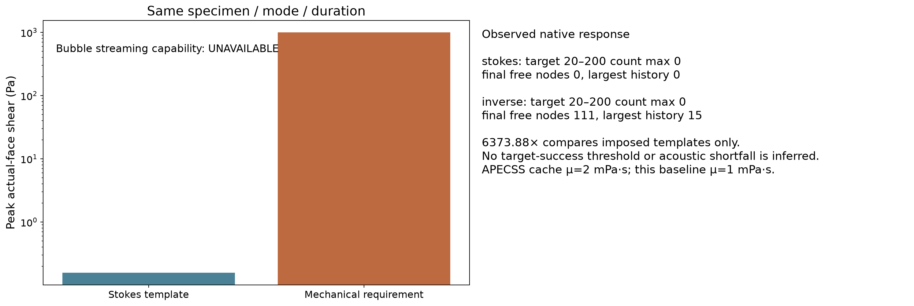
Actual material external work, storage, kinetic/damage/contact energy and independent numerical balance; zero net force does not mean no shear work.
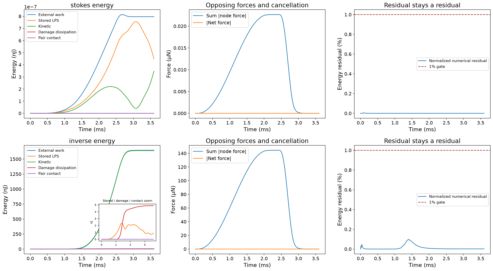
Live original bridging bonds and failed-edge networks; diagnostic volume is not a prescribed fragment or loading mask.
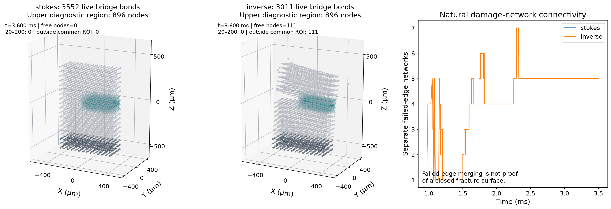